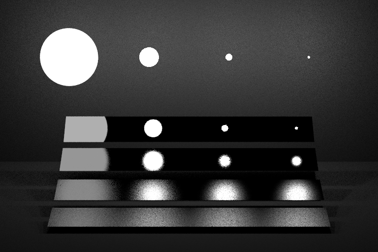

A5: Sampling lights
Contents
In this final assignment, you will use the sampling and integrator interfaces from the previous assignment to build powerful new integrators that can handle lights with much less noise than you've seen so far.
This assignment consists of three parts. In the first, you will implement sampling routines for different geometries, and visualize the resulting points. Then you will modify the existing shapes in darts to allow sampling them and evaluate their PDFs. Finally, you will implement new integrators that make use of the ability to sample emissive geometry in the scene.
Task 1: Sampling Geometry
In this part, you will implement (in include/) a few new functions for sampling basic geometry, which will make the later parts of the assignment easier. Similar to last time, you should write a standalone program to generate and save a few hundred points from your functions, and visualize them using your favorite plotting tool (we will show screenshots from plot.ly). You can reuse the same program you used in the previous assignment.
Triangles

Implement a function sample_triangle() that produces points uniformly at random on a triangle with the specified coordinates. There are different ways you can do this; the easiest way is to first generate random barycentric coordinates (alpha, beta, gamma), and then return the corresponding interpolated point v0*alpha + v1*beta + v2*gamma.
Also implement the corresponding sample_triangle_pdf() function.
Visualize points from your function for a triangle with corners (0,0,0), (1,1,1) and (0.5, 1, 2). You should get points like the ones shown in the image here.
Spherical Cap

Now implement the function sample_sphere_cap() to sample points uniformly at random from a spherical cap. You've already (implicitly) implemented this method for your previous assignment: Sampling the sphere and the hemisphere are just special cases of sampling different sections of the sphere. Copy-paste the code for sampling the hemisphere from your previous assignment; all that needs to change is the computation of cos_theta: It should be distributed uniformly between 1 and cos_theta_max; this is the cosine of the largest angle that points are allowed to have with the normal. In pseudo code, cos_theta = lerp(cos_theta_max, 1.0f, <uniform random number>).
Also implement the corresponding sample_sphere_cap_pdf() function.
Visualize your code for an angle of pi/4 (Hint: You pass the cosine of the angle to this function, not the angle directly). It should look something like the image shown here.
Task 2: Making Lights Sampleable
In this task, you will extend the surface base class in darts with a new sampling interface. Open surface.h. You should see a new struct EmitterRecord, and three new methods: Surface::sample(), Surface::pdf(), and Surface::is_emissive(). Read their documentation.
Surface::sample() will generate a random direction that points from rec.o towards the surface. The direction is guaranteed to hit the surface from rec.o. Usually, you will do this by first generating a point on the surface (using the functions from Task 1) and then computing the direction from rec.o to the point. However, for certain shapes (like the sphere), we will sample directions directly.
Surface::pdf() will return the probability density of generating a certain direction v, seen from point o. Usually, you would implement this by tracing a ray from o in direction v and checking if it hits the surface (and returning 0 if not - we never generate directions not towards the surface); the PDF is then the PDF of generating the hitpoint (usually 1/surface area) times the geometry factor (squared distance to o divided by the cosine of v with the surface normal at the hit point).
Similar to last assignment, we provide a new set of tests for your sampling code. The implementation is available in src/tests/surface_sample_test.cpp. Add it to your project by modifying the CMakeLists.txt file like you did in the previous assignment.
Rectangles
To help you get started with sampling surfaces, we provide working implementations of Quad::sample() and Quad::pdf() in quad.cpp.
Quad::sample(), generates a random point on the rectangle, stores it in rec.hit.p, and computes the normalized direction from rec.o to this point, along with the PDF and other members of the EmitterRecord. It then returns the emitted color of that surface point divided by the PDF.
Quad::pdf(), checks if the given direction hits the Quad from the given origin o. If not, it returns 0; otherwise, it returns 1/area times the geometry factor.
You can test this code using the sample tester tool by running:
darts scenes/assignment5/test_surfaces.json
You should get images like these for quad-pdf.png and quad-sampled.png:

Triangles
Now add and implement Triangle::sample() and Triangle::pdf() (we've already implemented Triangle::is_emissive() for you). Use exactly the same recipe as you did for the quad - all that needs to change is how to get a point on the surface, and the computation of the surface area. Look at Triangle::intersect() for inspiration for how to get the three corners of the triangle (p0, p1 and p2).
Spheres
Open sphere.h and sphere.cpp, and add and implement Sphere::sample() and Sphere::pdf() (we already provide you XformedSurfaceWithMaterial::is_emissive(), which Sphere inherits).
We will use a different approach for sampling the sphere: Instead of sampling a point on the sphere first and computing the direction towards it, we will directly sample the cone of directions that all point towards the sphere. To do this, you can use your function for sampling spherical caps from the first task. However, to use this function you need to first figure out cos_theta_max, the angular extent of the sphere as seen from rec.o. You can compute it with cos_theta_max = sqrt(d*d - r*r)/d where d is the distance from the center of sphere to rec.o, and r is the radius of the sphere. Hint: Can this formula fail? When does this happen? What should the value of cos_theta_max be in that case? Note that the sphere may be transformed by a Transform, so r may not simply be Sphere::. You may assume that the Transform contains only isotropic scaling and rotation. How can you compute the resulting radius in that case?
The sampling function you implemented in Task 1 assumes the spherical cap is aligned with the z axis. You should use your ONB class to transform the sampled direction, so that the spherical cap points from rec.o towards the center of the sphere instead.
For Sphere::pdf(), you should first check if the ray with the given origin/direction intersects with the sphere. If it does, the PDF is simply 1/solid angle of the spherical cap (no geometry factor needed - we generated directions directly!). The solid angle of a spherical cap with opening angle of theta_max is 2*pi*(1-cos(theta_max)).
Test your code with the sample tester tool by running the scene scenes/assignment5/test_surfaces.json again. You should get images like these:

Surface Groups
Open surface_ and surface_ and implement the sampling interface for the SurfaceGroup class. This class represents a collection of shapes (e.g. the list of all lights in the scene), which are stored in the array m_surfaces. For SurfaceGroup::sample(), you should randomly generate an integer index in range 0...m_surfaces.size() - 1 (inclusive) and call the sample() method of the surface at that index in the array. For pdf(), you should call the pdf() method of each surface in the list, and return the average of all the PDF evaluations. Hint: You can use the following syntax to iterate over all shapes:
for (auto surface : m_surfaces) surface->do_something();
Test your code with the sample tester tool by running the scene scenes/assignment5/test_surfaces.json again. You should get images like these:
Task 3: Integrating Lights
In this task, we will implement better integrators for direct lighting. You'll use the sampling interfaces you implemented in the earlier task to explicitly guide rays towards light sources.
Note that the algorithm described in this assignment is slightly different from the pseudo-code shown in class: Both algorithms will work, and you are free to implement either version, as long as it gives you the correct image.
We will begin by focusing on direct lighting, and then slowly extend our integrators to account for global illumination.
Direct Lighting Material Integrator
{kind=link}
First make sure your PathTracerMats integrator from the last assignment can successfully render scenes/assignment4/veach_mats.json to produce a direct illumination image like the one shown here when ‘"max_bounces"’ is set to 1.
Most of this image looks extremely noisy, especially the background and the reflections in the lower right. We can do better than this!
Creating a list of scene emitters
Instead of asking the Material to generate ray directions for us, we could instead generate ray directions by sampling points on all surfaces in the scene using our new Surface::sample() function. As it is now, however, this would not be so useful, since most surfaces in the scene do not emit light. We'd like to sample rays towards surfaces that emit light. To do that we first need to add some plumbing to our code to allow a Scene to maintain a list of only the emissive surfaces.
Next Event Integrator
Add a new integrator class called PathTracerNEE, and register it with the factory using the string "path_tracer_nee". The "NEE" part stands for Next Event Estimation, which is a fancy name for sampling light sources directly. We will start by implementing direct lighting with no recursion first.

On a basic level, this integrator looks very similar to the material-based integrator from the previous subtask (and you can start by copy-pasting that code and removing the recursion). However, instead of calling Material::sample() to produce a direction, it should call scene.emitters().sample(). scene.emitters() is a SurfaceGroup that contains all emissive shapes in the scene. Similarly, instead of dividing by Material::pdf(), you should divide by scene.emitters().pdf().
This (for the first time) shows the flexibility of the Monte Carlo approach: All you had to change was the sampling and PDF routine, and you get a noise-free image much faster! This would not have been possible with the renderer you wrote in Assignment 1. Convince yourself that this integrator has much less noise by running your new code on scenes/assignment5/veach_nee.json. You should get an image looking like the one shown here.
This looks much better than the PathTracerMats integrator for most of the image... except for the upper left, where the NEE estimator does much worse. Just like discussed in class, we'll fix this by combining both estimators with MIS in the next section. Also beware that this new estimator will not (yet) work correctly if you set "max_bounces" > 1. We'll handle that further in this assignment.
Additional verification
But before we do, we've designed a few more scenes to help you debug and verify your implementation.
If the Veach scene isn't rendering correctly, it can be difficult to isolate the issue because it tests multiple features simultaneously. We provide a simpler set of scenes to help you debug your sphere lights and integrators. They are scenes/assignment5/sphere_light_[small|medium|large]_XXX.json. These scenes rely on the principle that two fully visible sphere lights will produce identical illumination on a diffuse surface even if their radii are different, as long as their power is the same.
The Veach scene uses sphere lights, but let's also test triangle lights. Render the scenes/assignment5/odyssey_triangle_mats.json and scenes/assignment5/odyssey_triangle_nee.json and scenes. This scene is identical to the one from the previous assignment, but the rectangular light source is composed of two Triangles instead of a single Quad. Compare these triangle versions to the quad versions in scenes/assignment4/odyssey_mats.json and scenes/assignment5/odyssey_nee.json.

MIS Integrator
Add a new integrator class called PathTracerMIS, and register it with the factory using the string "path_tracer_mis". The MIS part stands for Multiple Importance Sampling, which is a technique for efficiently combining multiple integration techniques.
Begin by copy-pasting either your PathTracerMats or your PathTracerNEE integrator from before. Instead of always sampling from the material, or always from the light source, you should sample from a mixture of both of them. With probability of 0.5, generate a direction by sampling the material; otherwise, generate a direction by sampling the lights. After you've generated a direction, trace a ray and evaluate the emission and material like before; however, instead of dividing by just the material pdf or the light PDF, divide by the average of the two PDFs (since you randomly sample from either one).
Test your integrator on scenes/assignment5/veach_mis.json and compare to the NEE and material sampling variants. You should get images like those below:
The integrator now works robustly in all parts of the scene, and combines the good traits of both material sampling and light sampling.
Also test your integrators on scenes/assignment5/odyssey_triangle_XXX.json. Here is our comparison:
Full Path Tracing
Now extend the PathTracerMIS integrator from the previous subtask to do not just direct lighting, but all direct and indirect lighting. Your code currently finds the closest hit point along the given ray, estimates direct lighting at that location and exits. All you need to do in order to support indirect light is to add recursion before exiting: After computing direct lighting, sample the material to obtain the next ray along the path, and call the function recursively with the new ray to obtain an estimate of indirect lighting. Divide that estimate by the material sampling PDF, and add this estimate to the direct lighting estimate. That's it!
Optional: You could complete your PathTracerNEE integrator to compute full global illumination in exactly the same way. Just generate a recursive ray by sampling the material in addition to the (non-recursive) shadow ray towards the lights.
Grad Students: Optimize your PathTracerMIS integrator. In the current version, you sample the material and trace a ray once for direct lighting, and a second time for the recursive ray. This is wasteful - they can both use the same ray and intersection (intersecting the scene is expensive!). Optimize your implementation to reuse the material ray and intersection for the recursive call. You can check the lecture slides for ideas on how to do this.
Test your new integrators on scenes/assignment5/jensen_box_XXX.json.
What to submit
In your report, make sure to include:
- Visualized point sets for all distributions from task 1
- Rendered images of all the scenes in
scenes/assignment5
Then submit according to the instructions in the Submitting on Canvas section of Getting started guide.